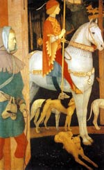

Куллох, в валлійської міфології син одного з лицарів короля Артура. Накладене ненавидів його мачухою закляття дозволяло Куллоха одружитися тільки на Олуен, дочки злісного велетня Іспаддадена. Юнак шукав Олуен більше року, і не дарма. тому що вони з Олуен полюбили один одного з першого погляду. Куллоха залишилося лише переконати Іспаддадена віддати за нього дочку. Як і у ірландського одноокого бога смерті Балора, повіки велетня були такі важкі, що йому доводилося піднімати їх вилами. Наречений не сподобався валлійському велетню. Розмовляючи, Іспаддаден не раз метил отруєним списом в Куллоха і його товаришів, але тим вдавалося перехопити зброю.
Велетень дав згоду на шлюб дочки за умови, що Куллох пройде ряд важких випробувань: викорчують ліс, спалить дерева, удобрить золою землю і зоре її - за один день; змусить бога землеробства Амаетона виростити урожай; попросить бога-коваля Гованнона викувати плуг; приведе чотирьох могутніх биків; дістане чарівні насіння.
Потім добуде мед в дев'ять разів солодше меду, зібраного молодим роєм; принесе чарівну чашу і кошик смачного м'яса; запозичить у підводного короля Гвіддбвілла ріг для вина, а у Теірту - чарівну арфу, яка грала сама; зловить птахів красуні Рианнон, спів яких будило мертвих, а живих занурював в сон. Потім розшукає чарівний котел; для гоління велетня пристосувати ікло дикого кабана і зробить крем з крові відьми; вкраде чарівну собаку з повідцем і нашийником; найме мисливця Мабон, сина Модрон, якого спочатку треба визволити з в'язниці; відшукає чудесного коня і гончих псів; витягне з золотою щетини зухвалого вепра гребінець, ножиці і бритву; умовить ворогів Іспаддадена відвідати його замок. Всього Куллох повинен виконати 39 завдань Іспаддадена.
Чи не злякавшись найважчих випробувань, Куллох за допомогою лицарів короля Артура і союзників божественного походження виконав всі завдання, після чого одружився на своїй ненаглядної красуні Олуен. І вона була йому єдиною дружиною до самої його смерті.